FAQ
FAQ GUIDE
GUIDE CROSS
CROSS F2L
F2L OLL
OLL BEGINNER's
BEGINNER'sPermutation of Last Layer (PLL's)

PLL is the last step of the Fridrich Method. After you finish OLL, pieces on the last layer will need to be permuted (moved around). Find out which diagram indicates how you need to move them around, and apply the algorithm. Before you go off finding which case you have, use U/U'/U2 turns to align as many pieces as possible. Then one of the diagrams should match what you have.
2look PLL
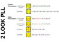You need all of the 21 algorithms below to solve this stage in a single step. However, if you are willing to do it in two steps instead, you can use what is called the 2look PLL. You then only have to learn 6 of them (at the expense of speed obviously). Watch my video HERE to learn the 2look PLL.
Also, here is a printable sheet of all cases and solutions for reference, in pdf format (Thank you Husayn for making and sending me this sheet)
PLL Trainer
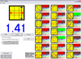This is a program that I wrote that helps you practice PLLs. It generates a random PLL, and then it times how quickly you can perform it. It keeps track of all of this, gives you averages, etc. To rotate any of the PLL's in the program, just rotate the image in the folder. The program just loads these images when it starts.
For full description go here
DOWNLOAD, How-to run on Linux (thanks Gopi!)
Introduction to my solutions
NOTATION LINK to check out notation that you don't know.
Difficulty to Learn at each row assumes that you already know all algorithms in all rows above it
These algorithms are organized and presented to best aid you in MEMORIZATION. I highlited and grouped the notation that I thought would best help you memorize the algorithms, and i also color coded some very frequent triggers. Also, algorithms that are very close to each other are grouped by background color in the "Difficulty to Learn" column.
This (excel sheet link) may help you with pattern recognition for the PLLs. Thank you RiDo for making this!
You can go to Bob's PLL page and watch his videos on how he executes each algorithm with fingertricks, because many of his and mine are indeed the same, or very similar. [UPDATE: his videos seem to be gone now...]The following algorithms are PLLs in the approximate order that I suggest you learn them:
Algorithms that I use
The latter two pdfs may be slightly out of date on 2-3 algorithms.
PRINTABLE PAGE (pdf) (thanks Andy! also check out his nice website for more pdfs)
ALTERNATIVE PRINTABLE PAGE (pdf) (thank you aaron!)
ALTERNATIVE PRINTABLE PAGE (pdf) that includes descriptions. (thank you karan!)
| Diagram | Algorithm | Name | Chance of Occurence | Difficulty to Learn | Comment |
| 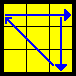 | x [(R' U R') D2] [(R U' R') D2] R2 | A (a) |
1/18 |
XXX | The algorithm has a little bit of a symmetry to it. I have a very weird way to memorize this algorithm tracking the two corners in UBR and UFR around the cube as I do it. But I know that many of my friends do it differently. Find what suits you best, it is not too hard or long. |
| 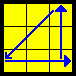 | x' [(R U' R) D2] [(R' U R) D2] R2 | A (b) |
1/18 |
XX | This is the exact same type of motion you do in A(a). If you memorized it by motions instead of notation, you should be able to do this one without too many problems. |
| 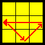 | [R U'] [R U] [R U] [R U'] R' U' R2 | U (b) |
1/18 |
X | Note how the algorithm is basically always R and then U' U U U' in that symmetrical order accompanying the R, and lastly R' and fix up rest by aligning pieces. |
| 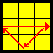 | R2 U [R U R' U'] (R' U') (R' U R') | U (a) |
1/18 |
X | The way I remember it: R2 U, then the RUR'U' trigger, then the last two letters of the RUR'U' trigger, then do R' and fix up rest by aligning pieces and putting them to their right positions. |
| 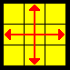 | M2 U M2 U2 M2 U M2 | H |
1/72 |
X | A very easy to remember algorithm. Note how the M2's always alternate, and in between you simply have just U, U2, U |
| 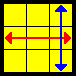 | [R U R' U'] [R' F] [R2 U' R'] U' [R U R' F'] | T |
1/18 |
XX | I find it easy to learn this algorithm by tracking F2L pairs around the cube.RUR'U' takes out a pair. R'F hides it and takes the other pair out to the top layer. R2U'R' aligns this pair with the whites and hides that pair. Now all the pairs are hidden from the top layer. Now we do U' on the Top Layer. Finally RUR'F' takes the second pair out and aligns it with the whites again, and restores the First Two Layers. |
| 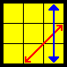 | [R U R' F'] {[R U R' U'] [R' F] [R2 U' R'] U'} | J (b) |
1/18 |
X | Notice that this is EXACTLY the same algorithm as the one above but the RUR'F' from the end was now moved to the beginning! So just do RUR'F' and then start doing the T permutation (above) until you see that the cube is solved! |
| 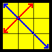 | F R U' R' U' [R U R' F'] {[R U R' U'] [R' F R F']} | Y |
1/18 |
XX | Again I find it helpful to see how F2L pairs move around for this algorithm. F brings an F2L pair to the top, RU'R' inserts that pair back to the middle. Now again as before, all F2L is again intact, but slightly messed up. Then U' is done as in T permutation, and then RUR'F' is AGAIN used to take that pair and insert it back where it was before. The result will leave you with an OLL, which after when you fix using the appropritate algorithm, you will be left with Ypermutation at the end. Note that the OLL is very easy: It takes one pair out to top layer, and inserts it back a different way (in particular, using R'FRF') |
| 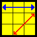 | [R' U2 R U2] [R' F] [R U R' U'] [R' F'] R2 U' | R (b) |
1/18 |
XX | Again for this one I find it easiest to track an F2L pair. Remember the first part using just notation because it is easy. After R'F you have an F2L pair on the bottom. Then you do RUR'U' trigger. Next, R'F' reconnects that F2L pair and alligns it with the whites on top, and R2U' just finishes it all up. |
| 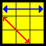 | [L U2' L' U2'] [L F'] [L' U' L U] [L F] L2' U y2 [R U2 R' U2] [R B'] [R' U' R U] [R B] R2 U |
R (a) |
1/18 |
X | This is just the reflection of the above. You need to do the above, but using the left hand instead of the right hand. You will be able to mirror the R permutation to your left hand after about a weeks practice of doing it with your right hand. When it becomes a little bit of muscle memory for you it should be really easy to mirror the algorithm with the left hand. So if you can't do it right away, just wait a little more and get a little more comfortable with R(b). The second algorithm is an alternative that I sometime like to do because it involves the (faster) right hand instead. |
| 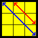 | [R' U R' d'] [R' F'] [R2 U' R' U] [R' F R F] | V |
1/18 |
XXXX | I don't really have a great way to memorize this and thats why I rated this as a hard algorithm. I kind of just did it until I had it in my muscle memory. Note how the R'FRF at the end is ALMOST the common R'FRF' trigger, but with F instead of F' at the end. |
| 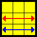 | [R' U2 R' d'] [R' F'] [R2 U' R' U] [R' F R U' F] |
F |
1/18 |
X | If
you know V permutation, this one is REALLY easy. I highlighted the
differences. There is simply one extra U, so instead of R' U R' in the
beginning you have R' U U R' (or R' U2 R'), and then you have to undo
that U at the end of the algorithm, so there is an extra U' that pops
in from nowhere near the end of the algorithm. |
| 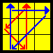 | [R U R'] y' R2 u' R U' R' U R' u R2 | G (d) |
1/18 |
XX | RUR' takes out a pair. Then rotate the cube, and now the fun part starts. I highleted the R rotations so that you can see the pattern better. Notice in particular how the U turns are. It is u' U' U u. It has a very nice symmetry to it. The R's I remember as follows: Since in execution I perfrom the R2 as RR (in clockwise motion), I see them as R clockwise twice, and then R counterclockwise twice, and the final R2 is just to finish up the algorithm. You are welcome to come up with better memory techniques for this things. I know a couple of friends, each with different ways of remembering these G perms... |
| 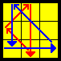 | [R' U' R] y R2 u R' U R U' R u' R2 | G (b) |
1/18 |
XX | This is similar. First take out the pair that is right under the aligned 2x1x1 block, as in G(d), and then rotate the cube, and do a similar pattern. See how there is a symmetry to the U's again? u U U' u'. When I execute, I do the first R2 as R' R', counterclockwise motion. So I think CCW, CCW, CW, CW, and final R2 just to fix it all up. |
| 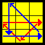 | R2 u' R U' R U R' u R2 [y R U' R'] | G (c) |
1/18 |
XXX | This is simply G(d) inverted. But I find it useless to remember it like that. This is like a completely new algorithm for me. Note the still distinct pattern to the U's. And also R's. Remember it as you wish. The last part yRU'R' just inserts an F2L pair once the first part is done. |
| 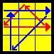 | R2 u R' U R' U' R u' R2 [y' R' U R] | G (a) |
1/18 |
XX | This is very similar to G(c). Everything just goes the other way :) |
| 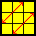 | M2 U M2 U M' U2 M2 U2 M' U2 |
Z |
1/36 |
X | Similar to the H permutation, I find this easy to remember, and I saw some people executing it extremely quickly. |
| 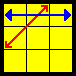 | [R' U L'] [U2 R U' R' U2] [R L U'] | J (a) |
1/18 |
XX | 1st part is exactly as in N(b), below. But then you do U2RU'R'U2 which I find personally very easy to remember. The last part (RLU)just simply restores all yellows and I find it very easy to see it visually. |
| 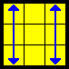 | x' (R U' R') D (R U R') D' (R U R') D (R U' R') D' x (R U' R') D (R U R') u2 (R' U R) D (R' U' R) |
E |
1/36 |
XX | This algorithm has a nice symmetry to it, as highlighted. Some people fund the second one faster to execute |
| 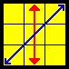 | {(R' U L') U2 (R U' L)} {(R' U L') U2 (R U' L)} U' | N (b) |
1/72 |
X | Note how the algorithm is made up of two IDENTICAL pieces (in squigly brackets). To memorize this, track the corner in UBR. As you do R'UL', it will travel along a U on the top layer of the cube. Then do U2, and then restore yellows by doing RU'L. Then repeat that whole thing again. I hate executing this algorithm. Its a good thing that it rarely ever comes up. |
| 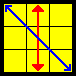 |
|
N (a) |
1/72 |
X | This is just the mirror of the algorithm above and should not be hard to learn. |